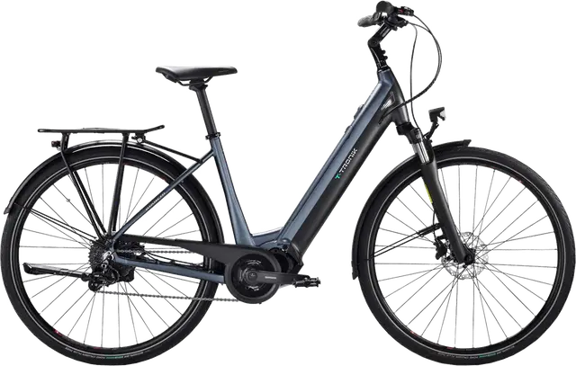

Bianchi T-Tronik C-Type

Digital Product Passport
Questo sito è un prototipo dimostrativo (Proof of Concept) di Digital Product Passport (DPP) applicato a una bicicletta Bianchi T-Tronik C-Type. Il DPP è un registro digitale che accompagna il prodotto lungo tutto il suo ciclo di vita: basta scansionare il QR code sul telaio per accedere a materiali, componenti e fornitori, impronta ambientale e istruzioni per l'uso, la riparazione e il corretto smaltimento a fine vita. L'obiettivo è mostrare, in modo concreto, come un solo codice possa rendere trasparenti e accessibili informazioni oggi disperse, rispondendo agli obblighi introdotti dal Regolamento europeo ESPR.
Esplora le sezioni del passaporto digitale usando il menu.
Dati verificabili da schede tecniche, fornitori ufficiali e documenti normativi.
Valori simulati per questo Proof of Concept. Nel DPP reale saranno popolati da quindi.ai con dati verificati da terza parte.
Disclaimer: Questo Digital Product Passport è un Proof of Concept sviluppato per dimostrare come l'infrastruttura quindi.ai abilita la conformità ai regolamenti ESPR e Batterie, e offre trasparenza sul ciclo di vita dei prodotti. I dati marcati come STIMA sono valori esemplificativi. Per il documento definitivo, i dati saranno certificati dalla fabbrica, verificati da terzi e sottoposti a governance rigorosa.